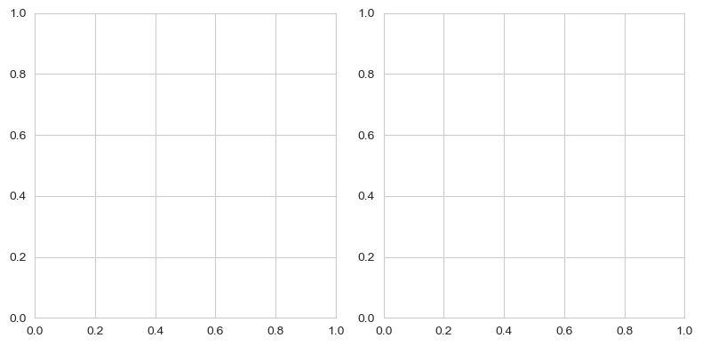
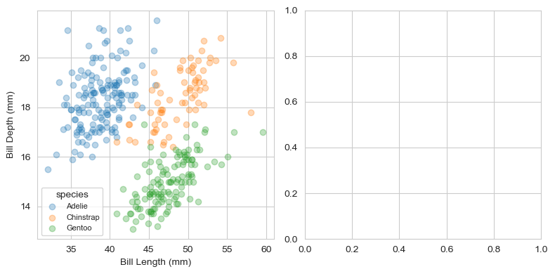
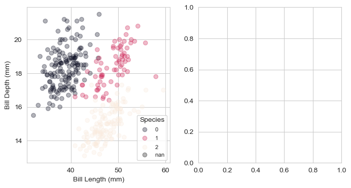
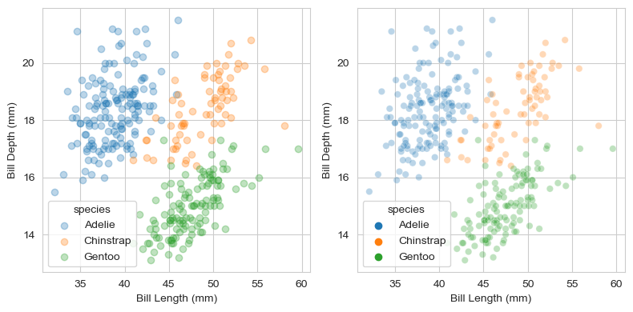
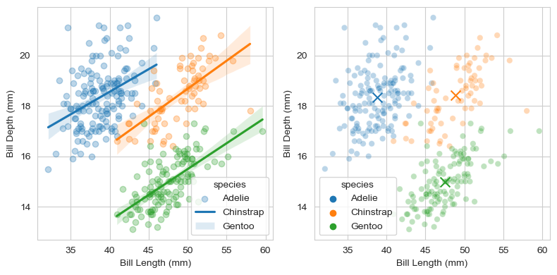
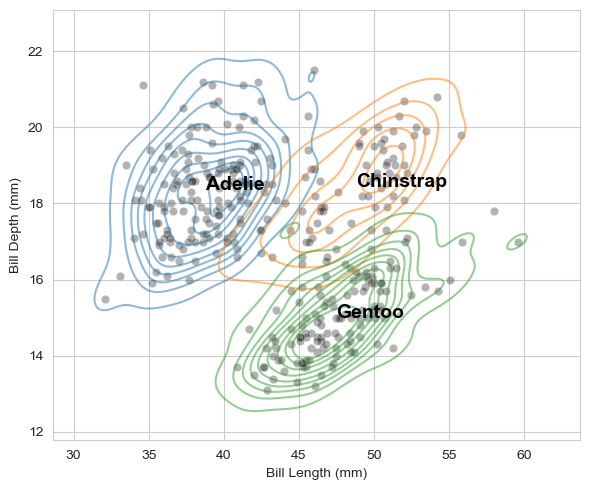
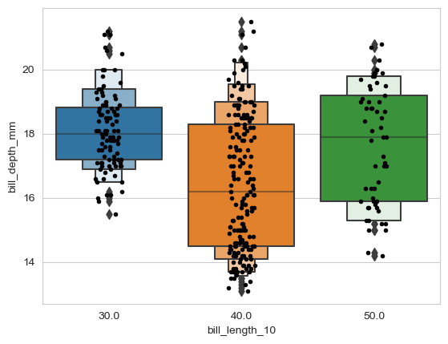
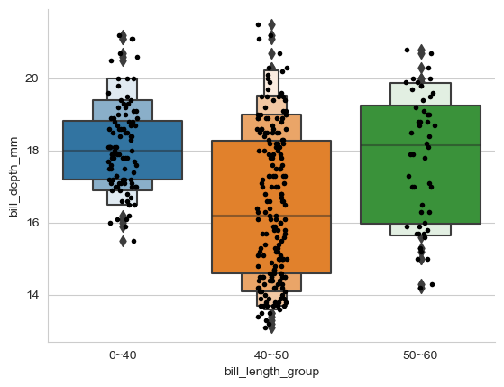
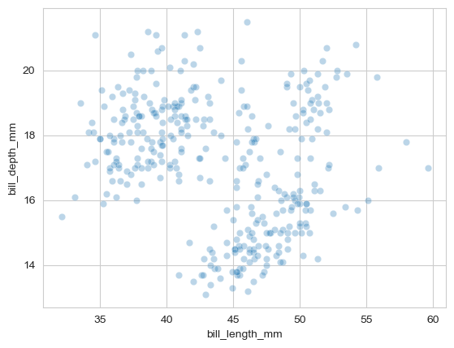
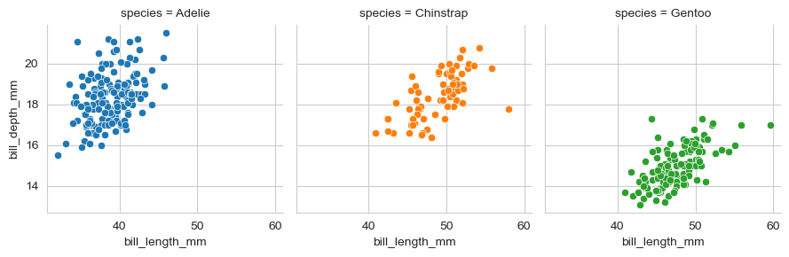

Data_Mining_Penguin
code
data_mining
jupyter
Penguin Data
 Jupyter에서 실행하기 Jupyter에서 실행하기
|
1 Load data
- 예제로 사용할 펭귄 데이터를 불러옵니다.
- seaborn에 내장되어 있습니다.
import pandas as pd
import matplotlib.pyplot as plt
import seaborn as sns
penguins = sns.load_dataset("penguins")
penguins.head()| species | island | bill_length_mm | bill_depth_mm | flipper_length_mm | body_mass_g | sex | |
|---|---|---|---|---|---|---|---|
| 0 | Adelie | Torgersen | 39.1 | 18.7 | 181.0 | 3750.0 | Male |
| 1 | Adelie | Torgersen | 39.5 | 17.4 | 186.0 | 3800.0 | Female |
| 2 | Adelie | Torgersen | 40.3 | 18.0 | 195.0 | 3250.0 | Female |
| 3 | Adelie | Torgersen | NaN | NaN | NaN | NaN | NaN |
| 4 | Adelie | Torgersen | 36.7 | 19.3 | 193.0 | 3450.0 | Female |
2 Figure and Axes
- matplotlib으로 도화지figure를 깔고 축공간axes를 만듭니다.
- 1 x 2 축공간을 구성합니다.
### 도화지 생성
fig, axes = plt.subplots(ncols=2, figsize=(8,4))
fig.tight_layout()
3 plot with matplotlib
matplotlib 기능을 이용해서 산점도를 그립니다.
- x축은 부리 길이 bill length
- y축은 부리 위 아래 두께 bill depth
- 색상은 종species로 합니다.
- Adelie, Chinstrap, Gentoo이 있습니다.
두 축공간 중 왼쪽에만 그립니다.
컬러를 다르게 주기 위해 f-string 포맷을 사용했습니다. f-string 포맷에 대한 설명은 https://blockdmask.tistory.com/429를 참고하세요
### 도화지 생성
fig, axes = plt.subplots(ncols=2,figsize=(8,4))
### 모든 펭귄 종류
species_u = penguins["species"].unique()
### 첫 번째 subplot 그리기
for i, s in enumerate(species_u):
axes[0].scatter(penguins["bill_length_mm"].loc[penguins["species"]==s],
penguins["bill_depth_mm"].loc[penguins["species"]==s],
c=f"C{i}", label=s, alpha=0.3)
### 범례 추가
axes[0].legend(species_u, title="species", fontsize=8)
### x,y 레이블 지정
axes[0].set_xlabel("Bill Length (mm)")
axes[0].set_ylabel("Bill Depth (mm)")
### plt.show()
fig.tight_layout()
- 조금 더 간단히 그리는 방법
- matplotlib는 기본적으로 Categorical 변수를 color로 바로 사용하지 못함
### 펭귄 종류를 고유의 숫자코드로 변환
penguins["species_codes"] = pd.Categorical(penguins["species"]).codes
### 도화지 생성
fig, axes = plt.subplots(ncols=2,figsize=(8,4))
### 첫 번재 subplot 그리기
a = axes[0].scatter(data=penguins, x="bill_length_mm", y="bill_depth_mm", c="species_codes", alpha=0.3) # 크기:s
a
### 범례 추가
axes[0].legend(*a.legend_elements(), title="Species", fontsize=8) # 범례위치 : loc='lower right', 'upper center', etc..
### x,y 레이블 지정
axes[0].set_xlabel("Bill Length (mm)")
axes[0].set_ylabel("Bill Depth (mm)")<__array_function__ internals>:180: UserWarning: Warning: converting a masked element to nan.
C:\Users\seong taek\anaconda3\lib\site-packages\matplotlib\colors.py:1311: UserWarning: Warning: converting a masked element to nan.
data = np.asarray(value)
C:\Users\seong taek\anaconda3\lib\site-packages\matplotlib\ticker.py:521: UserWarning: Warning: converting a masked element to nan.
if self._useLocale else fmt % arg)
Text(0, 0.5, 'Bill Depth (mm)')
4 Plot with seaborn
- 두 번째 plot 그리기
### 도화지 생성
fig, axes = plt.subplots(ncols=2,figsize=(8,4))
### 모든 펭귄 종류
species_u = penguins["species"].unique()
### 첫 번째 subplot 그리기
for i, s in enumerate(species_u):
axes[0].scatter(penguins["bill_length_mm"].loc[penguins["species"]==s],
penguins["bill_depth_mm"].loc[penguins["species"]==s],
c=f"C{i}", label=s, alpha=0.3)
### 범례 추가
axes[0].legend(species_u, title="species")
### x,y 레이블 지정
axes[0].set_xlabel("Bill Length (mm)")
axes[0].set_ylabel("Bill Depth (mm)")
### 두 번째 subplot 그리기
sns.scatterplot(x="bill_length_mm", y="bill_depth_mm", hue="species", data=penguins, alpha=0.3, ax=axes[1])
axes[1].set_xlabel("Bill Length (mm)")
axes[1].set_ylabel("Bill Depth (mm)")
fig.tight_layout()
- 단 세 줄로 거의 동일한 그림이 나왔습니다.
- scatter plot의 점 크기만 살짝 작습니다.
- label의 투명도만 살짝 다릅니다.
- seaborn 명령 scatterplot()을 그대로 사용했습니다.
- x축과 y축 label도 바꾸었습니다.
- ax=axes[1] 인자에서 볼 수 있듯, 존재하는 axes에 그림만 얹었습니다.
- matplotlib 틀 + seaborn 그림 이므로, matplotlib 명령이 모두 통합니다.
5 matplotlib + seaborn & seaborn + matplotlib
- matplotlib과 seaborn이 자유롭게 섞일 수 있습니다.
- matplotlib 산점도 위에 seaborn 추세선을 얹을 수 있고,
- seaborn 산점도 위에 matplotlib 중심점을 얹을 수 있습니다.
- 파이썬 코드는 다음과 같습니다.
### 도화지 생성
fig, axes = plt.subplots(ncols=2, figsize=(8, 4))
### 모든 펭귄 종류
species_u = penguins["species"].unique()
### 첫 번째 subplot 그리기 + 추세선
for i, s in enumerate(species_u):
axes[0].scatter(penguins["bill_length_mm"].loc[penguins["species"]==s],
penguins["bill_depth_mm"].loc[penguins["species"]==s],
c=f"C{i}", label=s, alpha=0.3
)
sns.regplot(x="bill_length_mm", y="bill_depth_mm", data=penguins.loc[penguins["species"]==s],
scatter=False, ax=axes[0])
axes[0].legend(species_u, title="species")
axes[0].set_xlabel("Bill Length (mm)")
axes[0].set_ylabel("Bill Depth (mm)")
### 두 번째 subplot 그리기
sns.scatterplot(x="bill_length_mm", y="bill_depth_mm", hue="species", data=penguins, alpha=0.3, ax=axes[1])
axes[1].set_xlabel("Bill Length (mm)")
axes[1].set_ylabel("Bill Depth (mm)")
### 중심점 marker
for i, s in enumerate(species_u):
axes[1].scatter(penguins["bill_length_mm"].loc[penguins["species"]==s].mean(),
penguins["bill_depth_mm"].loc[penguins["species"]==s].mean(),
c=f"C{i}", alpha=1, marker="x", s=100
)
fig.tight_layout()
6 seaborn + seaborn + matplotlib
- 안 될 이유가 없습니다.
- seaborn scatterplot + seaborn kdeplot + matplotlib text입니다
### 도화지 생성
fig, ax = plt.subplots(figsize=(6,5))
### plot 0: scatter plot
sns.scatterplot(x="bill_length_mm", y="bill_depth_mm", color="k", data=penguins, alpha=0.3, ax=ax, legend=False)
### plot 1: kde plot (밀도 그래프)
sns.kdeplot(x="bill_length_mm", y="bill_depth_mm", hue="species", data=penguins, alpha=0.5, ax=ax, legend=False)
### text:
species_u = penguins["species"].unique()
for i, s in enumerate(species_u):
ax.text(penguins["bill_length_mm"].loc[penguins["species"]==s].mean(),
penguins["bill_depth_mm"].loc[penguins["species"]==s].mean(),
s = s, fontdict={"fontsize":14, "fontweight":"bold","color":"k"}
)
ax.set_xlabel("Bill Length (mm)")
ax.set_ylabel("Bill Depth (mm)")
fig.tight_layout()
7 Quiz
Bill length를 10단위로 나눈 후, Bill length에 따른 Bill depth의 boxplot을 그리시오
### bill length를 10단위로 만든 후, 새로운 컬럼 추가
penguins['bill_length_10'] = (penguins['bill_length_mm'] // 10) * 10
penguins| species | island | bill_length_mm | bill_depth_mm | flipper_length_mm | body_mass_g | sex | species_codes | bill_length_10 | |
|---|---|---|---|---|---|---|---|---|---|
| 0 | Adelie | Torgersen | 39.1 | 18.7 | 181.0 | 3750.0 | Male | 0 | 30.0 |
| 1 | Adelie | Torgersen | 39.5 | 17.4 | 186.0 | 3800.0 | Female | 0 | 30.0 |
| 2 | Adelie | Torgersen | 40.3 | 18.0 | 195.0 | 3250.0 | Female | 0 | 40.0 |
| 3 | Adelie | Torgersen | NaN | NaN | NaN | NaN | NaN | 0 | NaN |
| 4 | Adelie | Torgersen | 36.7 | 19.3 | 193.0 | 3450.0 | Female | 0 | 30.0 |
| … | … | … | … | … | … | … | … | … | … |
| 339 | Gentoo | Biscoe | NaN | NaN | NaN | NaN | NaN | 2 | NaN |
| 340 | Gentoo | Biscoe | 46.8 | 14.3 | 215.0 | 4850.0 | Female | 2 | 40.0 |
| 341 | Gentoo | Biscoe | 50.4 | 15.7 | 222.0 | 5750.0 | Male | 2 | 50.0 |
| 342 | Gentoo | Biscoe | 45.2 | 14.8 | 212.0 | 5200.0 | Female | 2 | 40.0 |
| 343 | Gentoo | Biscoe | 49.9 | 16.1 | 213.0 | 5400.0 | Male | 2 | 40.0 |
344 rows × 9 columns
### 박스 plot
sns.boxenplot(x = 'bill_length_10', y = 'bill_depth_mm', data=penguins)
### 점 표현
sns.stripplot(x = 'bill_length_10', y = 'bill_depth_mm', data=penguins, color='black', size=4)
sns.set_style('whitegrid')
plt.show()
7.1 sns.set_style
- darkgrid: 어두운 배경에 격자 라인이 그려지는 스타일
- whitegrid: 밝은 배경에 격자 라인이 그려지는 스타일
- dark: 어두운 배경에 격자 라인이 없는 스타일
- white: 밝은 배경에 격자 라인이 없는 스타일
- ticks: 격자 라인 대신 축의 눈금 표시가 있는 스타일
7.2 pd.cut 이용
### bill length를 구간별로 만든 후, 새로운 컬럼 추가
penguins['bill_length_group'] = pd.cut(penguins['bill_length_mm'],
bins=[0,40,50,60],
labels=['0~40', '40~50', '50~60'])
penguins| species | island | bill_length_mm | bill_depth_mm | flipper_length_mm | body_mass_g | sex | species_codes | bill_length_10 | bill_length_group | |
|---|---|---|---|---|---|---|---|---|---|---|
| 0 | Adelie | Torgersen | 39.1 | 18.7 | 181.0 | 3750.0 | Male | 0 | 30.0 | 0~40 |
| 1 | Adelie | Torgersen | 39.5 | 17.4 | 186.0 | 3800.0 | Female | 0 | 30.0 | 0~40 |
| 2 | Adelie | Torgersen | 40.3 | 18.0 | 195.0 | 3250.0 | Female | 0 | 40.0 | 40~50 |
| 3 | Adelie | Torgersen | NaN | NaN | NaN | NaN | NaN | 0 | NaN | NaN |
| 4 | Adelie | Torgersen | 36.7 | 19.3 | 193.0 | 3450.0 | Female | 0 | 30.0 | 0~40 |
| … | … | … | … | … | … | … | … | … | … | … |
| 339 | Gentoo | Biscoe | NaN | NaN | NaN | NaN | NaN | 2 | NaN | NaN |
| 340 | Gentoo | Biscoe | 46.8 | 14.3 | 215.0 | 4850.0 | Female | 2 | 40.0 | 40~50 |
| 341 | Gentoo | Biscoe | 50.4 | 15.7 | 222.0 | 5750.0 | Male | 2 | 50.0 | 50~60 |
| 342 | Gentoo | Biscoe | 45.2 | 14.8 | 212.0 | 5200.0 | Female | 2 | 40.0 | 40~50 |
| 343 | Gentoo | Biscoe | 49.9 | 16.1 | 213.0 | 5400.0 | Male | 2 | 40.0 | 40~50 |
344 rows × 10 columns
sns.boxenplot(x = 'bill_length_group', y = 'bill_depth_mm', data=penguins)
sns.stripplot(x = 'bill_length_group', y = 'bill_depth_mm', data=penguins, color='black', size=4)
sns.set_style('whitegrid')
sns.despine()
plt.show()
sns.scatterplot(x='bill_length_mm', y='bill_depth_mm', data=penguins, alpha=0.3)
plt.show()
- 열 기준 : species
- 색상 : species별
- 한 행의 subplot 개수
- map : x축, y축 지정
- sns.despine : 상단, 우측 축 제거
g = sns.FacetGrid(penguins, col='species',hue='species',col_wrap=3)
g.map(sns.scatterplot, 'bill_length_mm', 'bill_depth_mm')
sns.set_style('whitegrid')
sns.despine()
plt.show()